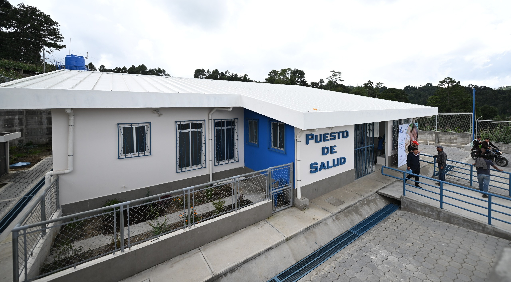
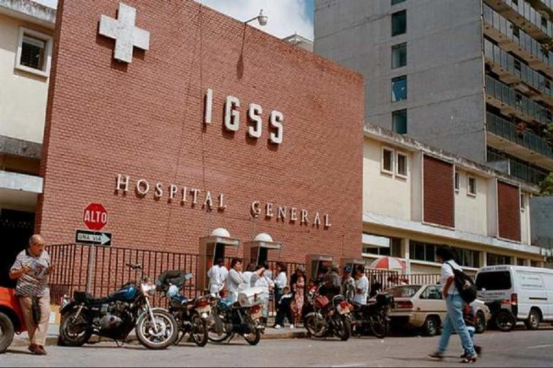

Articulación comunitaria en salud
Casos donde la capacitación de comadronas locales y promotores de salud ha logrado reducir los tiempos de respuesta ante emergencias obstétricas en zonas alejadas. (UNICEF, 2023)
CAPÍTULO 03 / SALUD Y CALIDAD DE VIDA
¿Qué cambia cuando el centro de salud queda a horas de camino, el acceso al agua potable no está garantizado o la atención médica exige recursos con los que no siempre se cuenta?
Explorar los datos ↓Salud, bienestar y condiciones de vida
La salud no es solamente la ausencia de enfermedad: abarca las condiciones cotidianas que permiten crecer, trabajar y planear el futuro con tranquilidad. Contar con servicios médicos oportunos, agua segura y una alimentación adecuada determina las posibilidades de desarrollo de cualquier persona.
Sin embargo, el bienestar no se distribuye de la misma manera en todo el territorio. Importan la distancia a los puestos y centros de salud, la disponibilidad de personal médico especializado, los costos de los medicamentos y la infraestructura básica en cada hogar.
En Guatemala, las estadísticas oficiales muestran grandes diferencias según el departamento, el área urbana o rural y el grupo étnico. Datos del Instituto Nacional de Estadística (INE) y del Ministerio de Salud Pública y Asistencia Social reflejan contrastes significativos en la esperanza de vida, la mortalidad materna, la desnutrición crónica y el acceso a servicios básicos. Son cifras que invitan a comprender las brechas estructurales sin reducir la dignidad de las personas a una simple estadística. (MSPAS, 2023) (INE, 2024)
La calidad de vida también se relaciona profundamente con el entorno ambiental y económico. Vivir en condiciones de pobreza limita el acceso a una dieta nutritiva y eleva la vulnerabilidad ante enfermedades prevenibles. Aunque existen programas comunitarios y puestos de salud rurales, la alta demanda y la escasez de insumos continúan siendo retos cotidianos para miles de familias. (UNICEF, 2023)
Analizar la ruta de acceso a los servicios médicos nos permite identificar qué barreras geográficas y económicas enfrentan las comunidades del país, permitiendo proponer mejoras reales en la atención pública. (INE, 2024)
Compara los grupos dentro de cada gráfico oficial de Guatemala.
Años estimados · escala de 0 a 85 años
Brecha en la expectativa de vida al nacer. (MSPAS, 2023)
Indicador de desigualdad en salud materna
Diferencias marcadas por contexto cultural y geográfico. (MSPAS, 2023)
Áreas urbana y rural · escala de 0 a 100 %
Acceso a infraestructura básica en el hogar. (INE, 2024)
Comparativa nacional y población indígena
Impacto directo en el desarrollo humano. (MSPAS, 2023)
Experiencias documentadas de atención primaria y salud preventiva en comunidades.
Casos donde la capacitación de comadronas locales y promotores de salud ha logrado reducir los tiempos de respuesta ante emergencias obstétricas en zonas alejadas. (UNICEF, 2023)
Estrategias locales enfocadas en combatir la desnutrición crónica mediante la producción de alimentos ricos en nutrientes a nivel comunitario. (FAO / MSPAS, 2022)
organizaciones locales que administran sistemas de agua segura para prevenir enfermedades gastrointestinales en la niñez. (OPS, 2021)
Resumen de las principales iniciativas públicas y comunitarias orientadas a la atención en Guatemala.
| Programa / Iniciativa | Objetivo principal | Ámbito de acción |
|---|---|---|
| Sistema de Extensión de Cobertura | Llevar servicios de salud preventiva y materno-infantil a comunidades rurales lejanas. | Nivel nacional (Rural) |
| Ventanilla de la Salud / Comadronas | Articular la medicina tradicional con el sistema oficial de salud pública. | Comunitario |
| Gran Cruzada Nacional por la Nutrición | Reducir la desnutrición crónica y mejorar la seguridad alimentaria infantil. | Interinstitucional |
Imágenes que ilustran la infraestructura de atención médica.


Respuestas e interrogantes solicitadas para completar la tarea del capítulo.
¿Cuál es la ruta de acceso a servicios de salud de tu grupo y en qué se diferencia de los casos de salud comunitaria investigados?
Como estudiantes ubicados en zonas urbanas (como Ciudad de Guatemala), nuestra ruta habitual consiste en trasladarnos a clínicas privadas o hospitales de la capital con disponibilidad inmediata de transporte y especialistas. Esto difiere radicalmente de los casos comunitarios investigados, donde las familias rurales deben caminar horas o depender de promotores locales y comadronas ante la ausencia de hospitales cercanos.
¿Qué relación ves entre salud y pobreza?
La pobreza limita severamente el acceso a una alimentación nutritiva, agua potable y saneamiento, lo que eleva el riesgo de enfermedades crónicas e infecciosas. A su vez, una mala salud genera gastos médicos elevados y reduce la capacidad de estudio o trabajo, atrapando a las familias en un ciclo difícil de romper.
Propón tres acciones para mejorar el acceso a servicios de salud en dos comunidades del país.
1. Implementar unidades móviles de atención médica preventiva y dotación de medicamentos en aldeas rurales de Alta Verapaz.
2. Ampliar y tecnificar los sistemas de saneamiento y abastecimiento de agua potable en comunidades vulnerables del corredor seco (como Chiquimula).
3. Fortalecer el presupuesto y la red de puestos de salud locales integrando el acompañamiento de comadronas capacitadas.